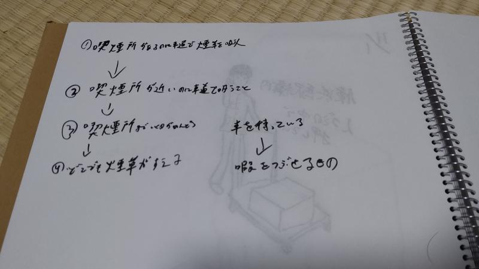
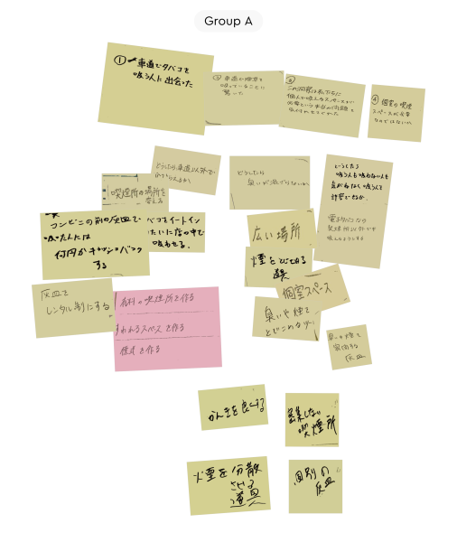
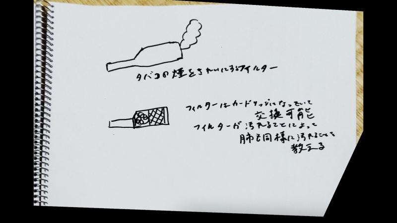
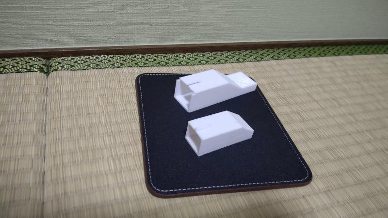

HOME
degifab
デザイン演習
degifab課題
第一回 1-1
第一回 1-2
第ニ回
スケッチ
第三回
第四回
演習課題
第一回
第二回
第三回
第四回
第五回
第六回
第七回
第八回
第九回
第十回
第十一回
第十二回
Design for Others-1
目次
ピックアップした対象
POV
HMW
構想段階の手書きスケッチ
プロトタイプ
設計ファイル
1 ピックアップした対象
車道でタバコを吸う人
近くにコンビニがあったがそこで吸わなかった。
2 POV

3 HMW

4 構想段階の手書きスケッチ

5 プロトタイプ

タバコの煙をきれいにするフィルター
非加熱式のタバコは、口から出る煙を消せれば、
どこでもタバコが吸えるようになると感じた。
また、汚れてるフィルターを見て、禁煙を考えさせることもできる。
6 設計ファイル
タバコフィルター1 設計図
タバコフィルター2 設計図
タバコフィルター3 設計図